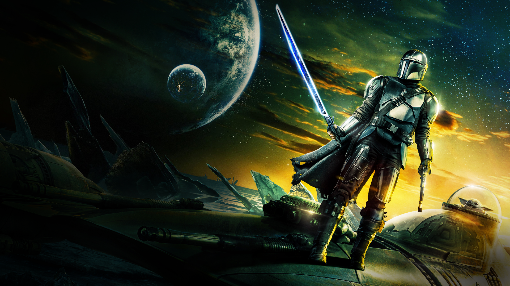
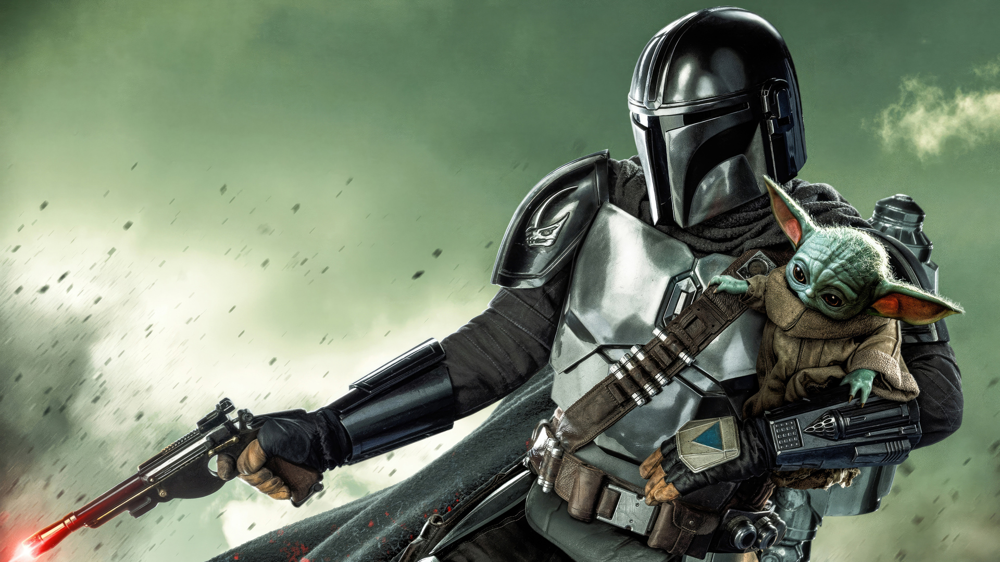

Um guerreiro mandaloriano viaja por todos os cantos da galáxia que foram esquecidos e sofrem com o descaso. Pistoleiro e corajoso, ele trabalha como caçador de recompensas e lida com o impacto da queda do Império e a Primeira Ordem que está por vir. Ao seu lado está um forte companheiro que ele prometeu proteger a todo custo.